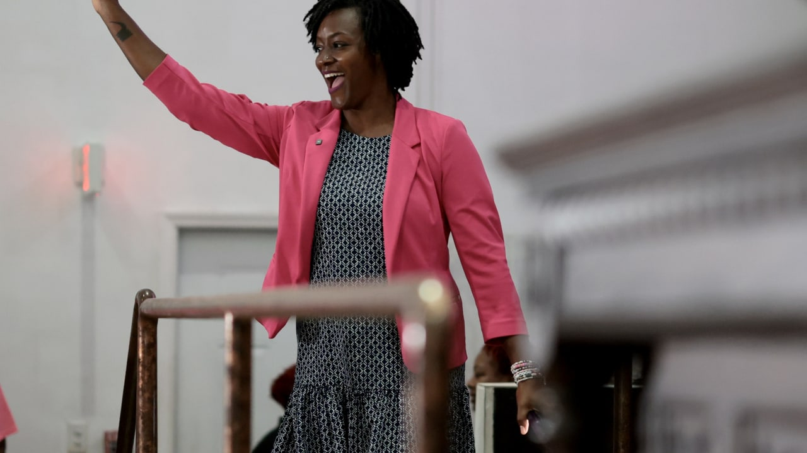

Breaking News
 August 19
August 19
by Olivia Bennett
Florida state Rep. Angie Nixon defeated Alex Vindman in the Democratic Senate primary, setting up a November race against Republican Ashley Moody
Florida voters staged a stunning upset Tuesday in a 2026 Senate primary, as state Rep. Angie Nixon beat former National Security Council official Alex Vindman in the Democratic primary. The result reshaped the Democratic contest for the Senate seat and demonstrated the rising fissures within the party between establishment candidates and progressive challengers. The Democratic nominee was a progressive legislator from Jacksonville, Nixon, who won despite being outspent and lacking the national name recognition of his opponent. Vindman is a retired Army lieutenant colonel who gained fame during Donald Trump’s first impeachment proceedings. He came into the race with a high profile and money behind him. That sets up a showdown in the November general election between Nixon and Republican Senator Ashley Moody, who won the GOP primary and is looking to finish out the rest of Marco Rubio’s Senate term. Nixon’s victory is just the latest instance of progressive candidates breaking ground in Democratic primaries, but it additionally points out the difficulties national-profile candidates encounter when running against grassroots campaigns that are focused on local issues.
Alex Vindman's national name recognition and lots of campaign cash make Angel Nixon's win a major upset. Vindman rose to prominence after serving as a key witness in Trump’s first impeachment inquiry into Ukraine. His military background and national security experience were at the center of his campaign, in which he positioned himself as a candidate who could challenge Republicans on foreign policy and government accountability. But Nixon managed to rally support around a progressive platform of access to health care, wages, affordable housing and economic inequality. Her campaign was built on grassroots organizing and spoke to Democratic voters looking for a more aggressive progressive voice. The candidates’ financial disparity was perhaps the defining element of the race. Reports said Nixon’s campaign had great activist support and enthusiasm from the voters, while Vindman raised much more money than Nixon. Nixon’s victory also had implications for wider Democratic Party debates about strategy as the party heads into the 2026 midterm elections. Some progressive candidates have argued that bold policy positions will energize voters, while more moderate Democrats have warned that general elections require broader appeal. The Florida results are a boost to progressive groups pushing candidates who break with traditional party leadership. The loss deals a blow to Vindman, whose national profile helped turn the Florida Senate race into one of the most closely watched Democratic primaries of the cycle. His supporters pointed to his military and government experience and said he would make a strong candidate in a tough statewide election. Nixon was designated the party’s nominee by Florida Democrats, who are now moving forward.
Senator Ashley Moody has won the Republican nomination and will now face off against Angie Nixon in the general election. Moody was appointed senator to fill the seat left vacant when Rubio became Secretary of State. Before joining the Senate, Moody was Florida’s attorney general, building a reputation as a conservative legal figure closely aligned with Gov. Ron DeSantis and Republican leadership in the state. Moody easily dispatched several Republican challengers and held on solidly with GOP voters. Her chief triumph was expected. The November contest will decide who finishes Rubio’s Senate term, making the race strategically important for both parties. Florida has shifted more Republican in statewide races but Democrats view the Senate contest as a chance to be competitive in a key battleground state. Supporters of Nixon say her grass-roots effort can pull in voters less engaged with traditional Democratic candidates. Republicans will likely point to Florida’s conservative voting trends and Moody’s tenure in statewide office. The race likely will center on such issues as the economy, health care, immigration, education and the future of Florida politics. A Democratic win would be a breakthrough in a state that Republicans have dominated in recent statewide elections. Republicans say keeping the seat would cement their ongoing power in Florida and save an important Senate seat.
The results of the Florida Senate primary are part of a bigger national story inside both parties as candidates battle over the future direction of their respective movements. The progressive activists’ growing power in Democratic primaries is reflected in Nixon’s win. She beat a candidate with a higher national profile and more money. That is the latest of several recent elections in which progressive candidates have taken on more traditional Democrats. Meanwhile, the Republican primary reaffirmed continued backing for candidates tied to Donald Trump’s political movement. Trump is still a force in Florida, and still shaping Republican races. With the November election drawing near, the Senate race is now an important race to watch. Florida’s size, electoral weight, and political makeover have made it a critical battleground in national politics. Republicans have opened a solid lead in recent statewide elections, but Democrats say changing demographics and voter unhappiness may provide openings. Moody, who has statewide experience and solid Republican backing, will be a tough opponent for Nixon. In a Republican-leaning state, the general election will present a challenge to a progressive Democratic candidate. The results also could shed light on broader national trends as the 2026 midterm elections approach. The Florida Senate race is viewed as an important barometer of both parties’ political strength and is expected to draw a lot of attention.
The major contests are behind us and Florida’s Senate race is now a general election race between two candidates with very different political visions. Progressive Democrat Angie Nixon is running on a platform of grassroots organizing and more government programs. Ashley Moody is a Republican incumbent who has some statewide executive office experience and a strong conservative base. The campaign should be marked by the contrast between the candidates. Nixon will seek to capitalize on Democratic support among younger voters, minority communities and progressive activists. Her campaign will probably focus on the economy, health care and affordability. Moody is expected to tout her record as attorney general, her public safety policies and her alignment with GOP priorities. National political groups will likely be paying close attention to the race, as Florida remains a critical state in the battle to control the Senate. The election also has historical significance. Her victory has been touted by Nixon's supporters as making her a potential trailblazer in Florida politics. But the environment for the general election will be much different than the Democratic primary. Nixon will need to expand her appeal beyond progressive voters and run in a state that has seen good Republican results in recent years. Moody will have to defend her record and keep together a broad Republican coalition. The November contest will be a test of whether Florida’s political landscape remains solidly Republican or whether Democrats can claw their way back into competitiveness statewide. The Senate race is expected to be among the most closely watched races of the 2026 election cycle.

Olivia Bennett is a U.S. political correspondent reporting on federal policy, election developments, and national governance issues.